Application
Event design exploration
Ten illustrated event concepts across four social formats.
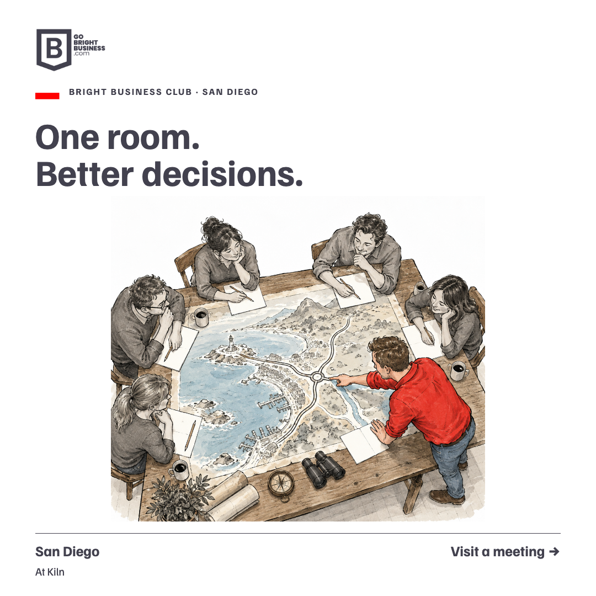
{kind=link}
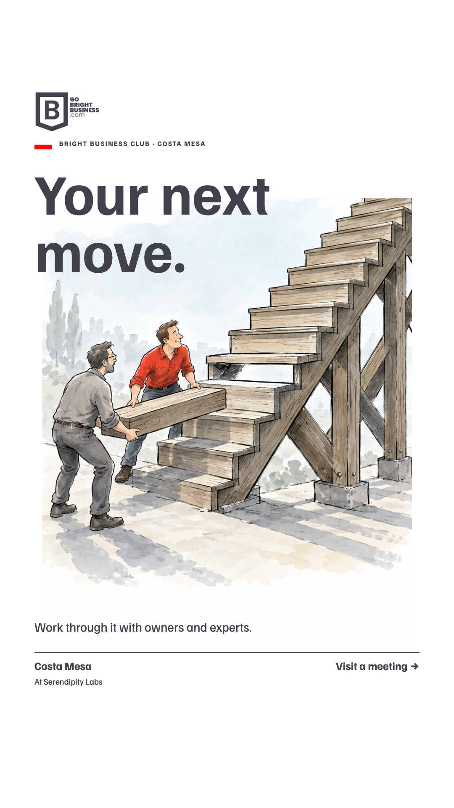
{kind=link}
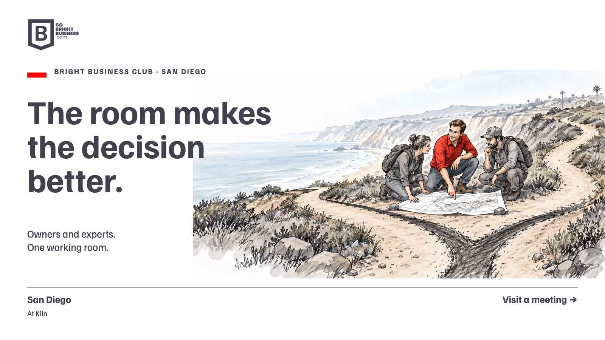
{kind=link}
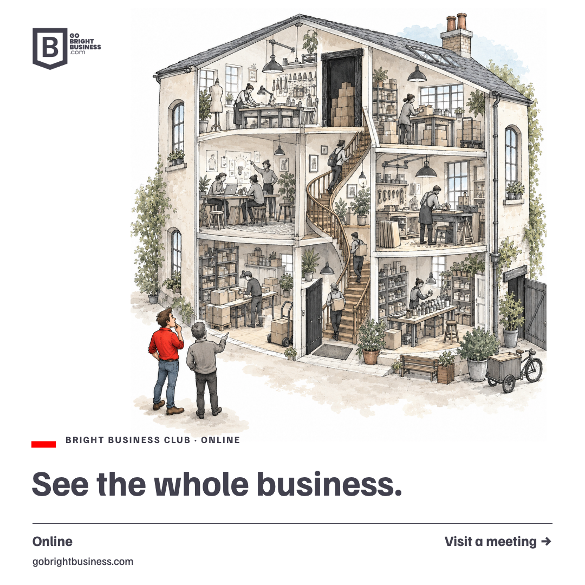
{kind=link}
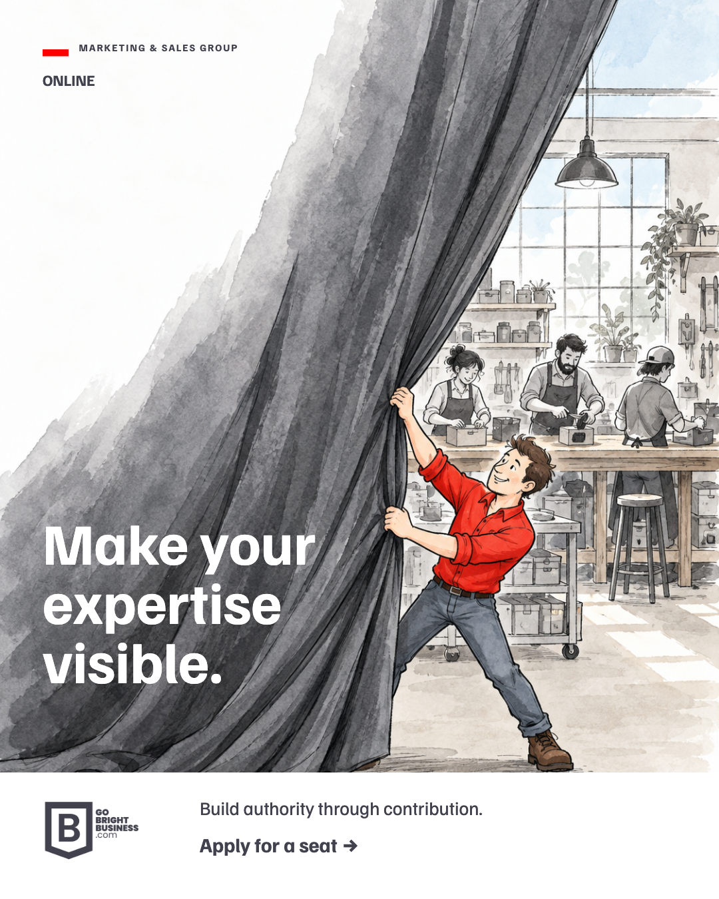
{kind=link}
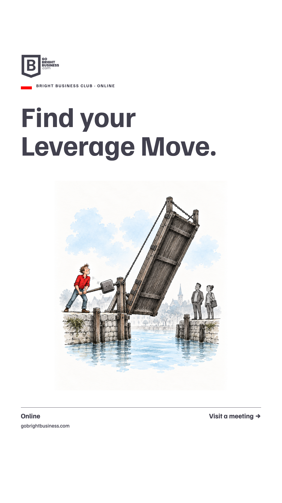
{kind=link}
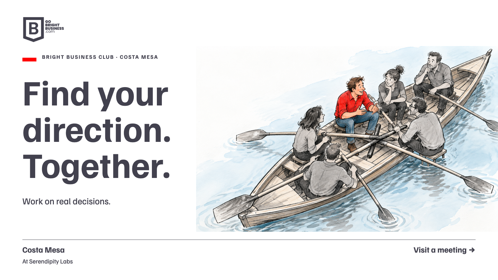
{kind=link}
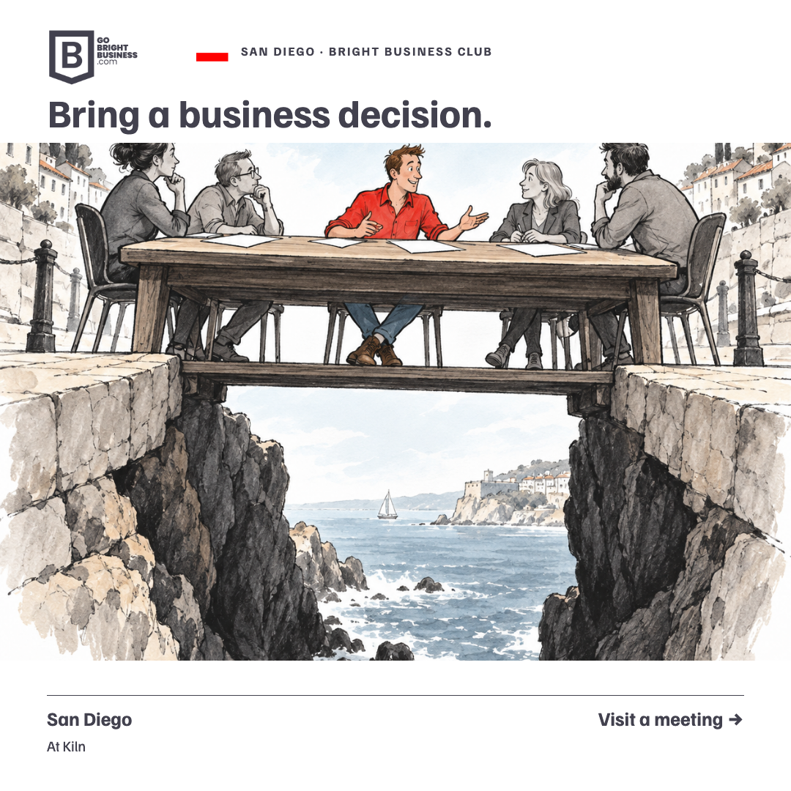
{kind=link}
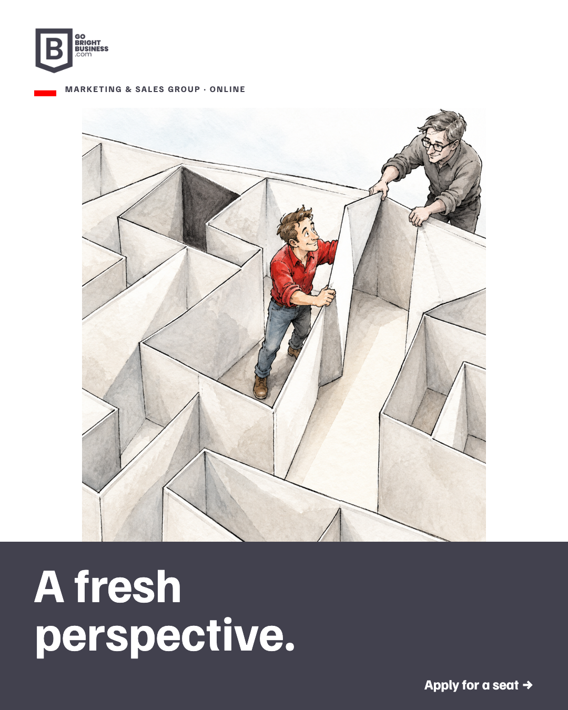
{kind=link}
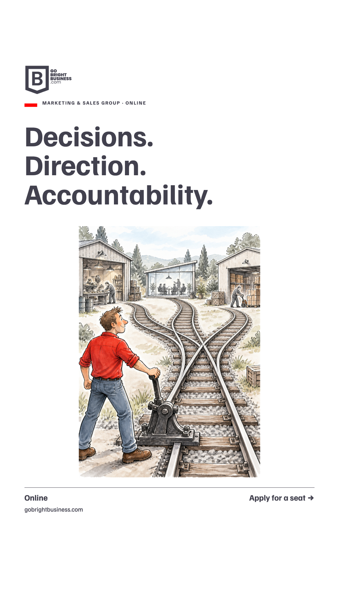
{kind=link}
In context
Square and portrait posts, stories, event listings and a LinkedIn event cover.
Illustrative placement previews. No event has been created.
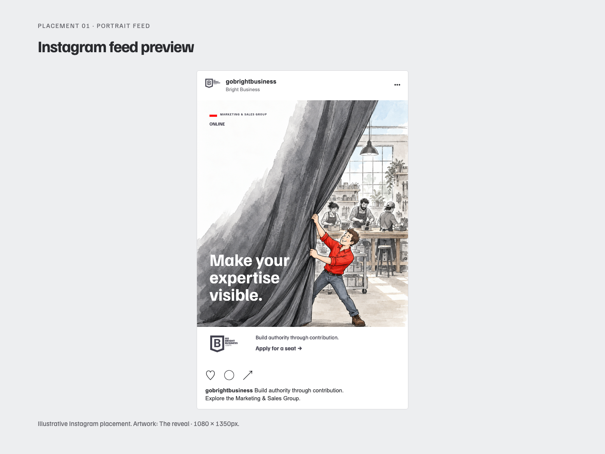
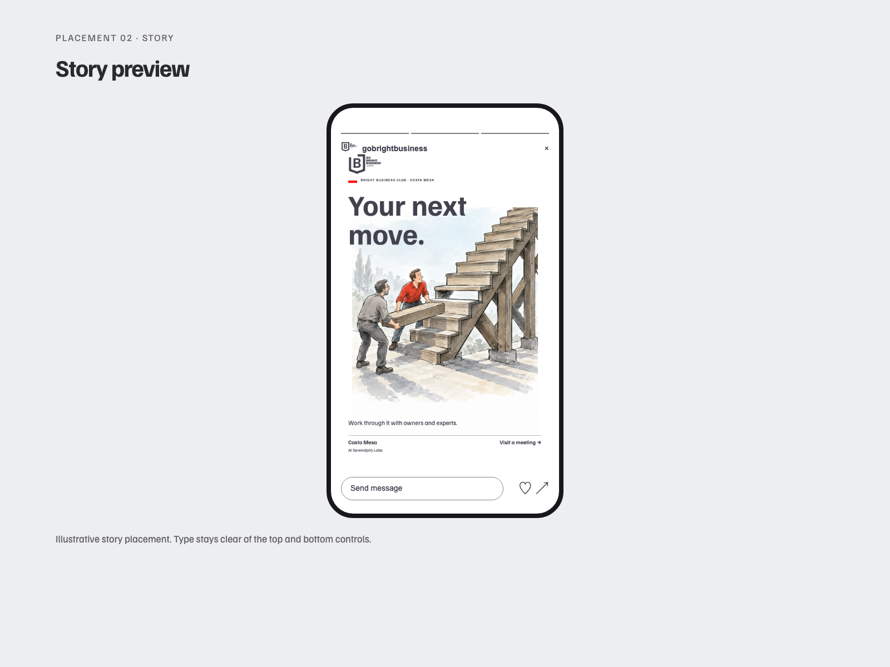
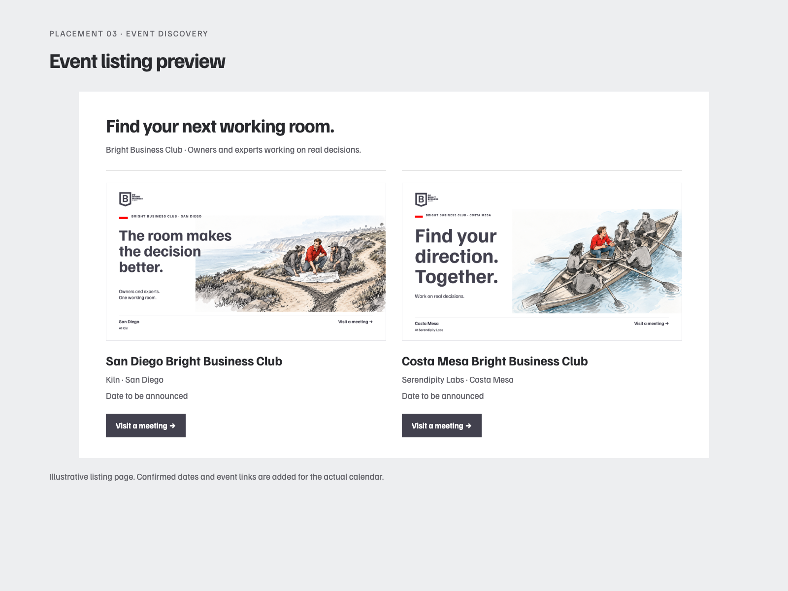
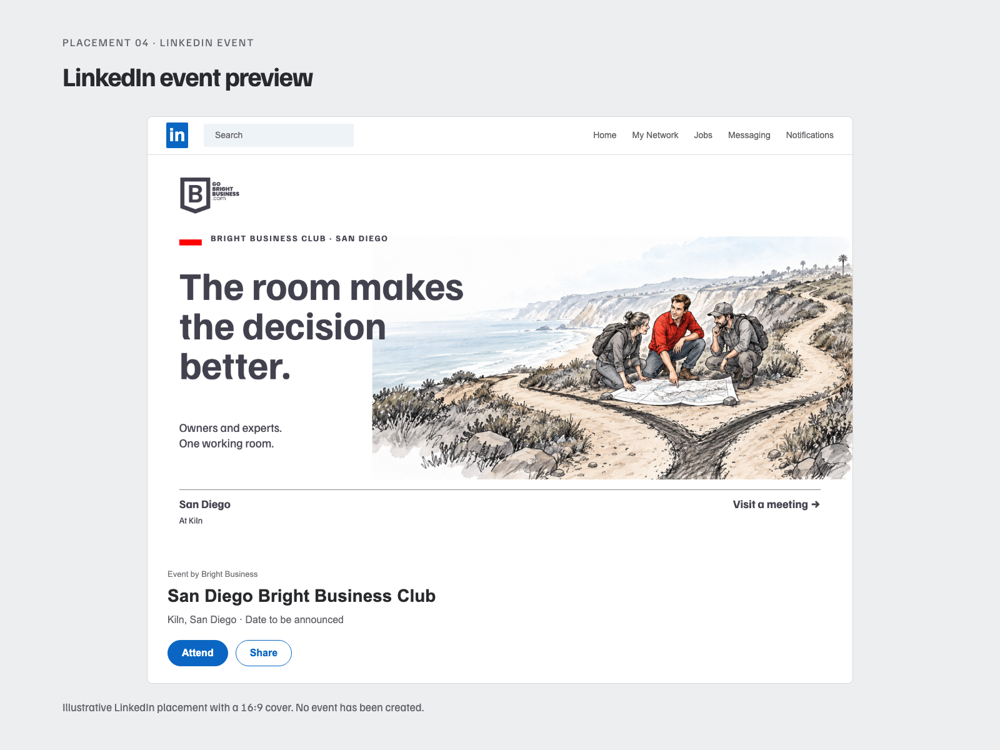
03
From design to the next event
These examples explore the visual direction. Add the confirmed topic, date, time, venue, speaker and sponsor details before using them for a scheduled event. The same idea can become a square post, story, cover and listing.
04
Formats
| Use | Canvas |
|---|---|
| Square social post | 1080 × 1080px |
| Portrait feed post | 1080 × 1350px |
| Story | 1080 × 1920px |
| Event cover and LinkedIn event | 1600 × 900px (16:9) |
05
Monthly and annual use
Once a direction is selected, apply it across the four programs and the confirmed calendar. Each export follows the same brand rules while keeping the format and occasion in mind.